対象：コードを書いたことがない方（Claude Code をはじめて使う方も歓迎）
使うもの：Claude デスクトップアプリ（Mac / Windows）の Code（Claude Code）・有料プラン
作るもの：自己紹介と作品を並べた 1ページのサイト（index.htmlというファイル1つと、画像を入れたimagesフォルダ）
公開のしかた：別紙「Netlify で公開する」を使います。この手順書は 「作る」ところまで を扱います
※ 画面写真は Mac のものです。Windows でも基本の流れは同じですが、ボタン名・保存画面・保存先は違うことがあります。
コードは一行も書きません。 やることは、Claude に日本語で「こう作って」とお願いするだけです。
今日いちばん覚えて帰ってほしいのは、この順番です。
🤔 なぜ、いきなり「サイトを作って」と頼まないのか
チャットで思いつくまま伝えると、作品の抜けや、書き忘れた連絡先が出ます。先に1枚の設計書にまとめておけば、Claude はそれを読んで全部を漏れなく並べられます。さらに、あとで作品が増えたときも設計書に1つ足して「反映して」と頼むだけで更新できます。
デザインを作り直しても中身は残るので、「中身」と「見た目」を別々に育てられるのが、この方式のいちばんの利点です。
自己紹介・作品カード・連絡先を1ページに並べたサイトです。今日はこの形を自分の内容で作ります。これは講師のものなので作品数が多めですが、作品が1つでも同じ形になります。記入例「ペン太」さん（作品3つ・うち1つは画像もリンクも無し）のサイトは、4章で出てきます。
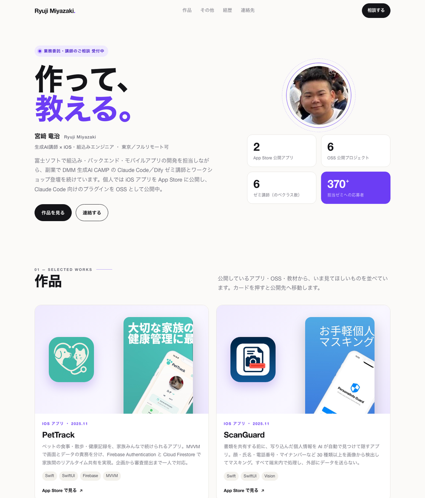
こちらは、記入例「ペン太」さんの設計書から お願い①だけで出てきたサイトです。まずここまで作り、そこから好きなだけ直していきます。
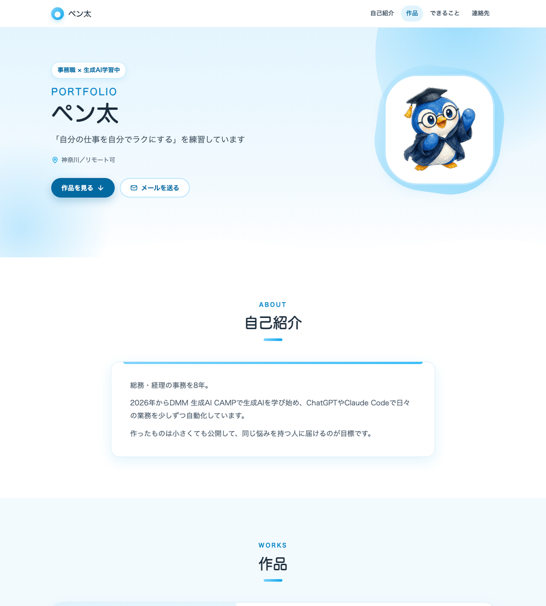
portfolio フォルダに index.html ができて、ダブルクリックで自分のサイトが開く📗 用語
ポートフォリオ：これまで作ったもの・できることをまとめて見せるための作品集。応募フォームやプロフィール欄に URL を貼って使います。
index.html：Web ページの本体となるファイル。ブラウザはこの名前のファイルを、そのフォルダを開いたときに最初に表示されるページとして扱います。だからサイトの本体はこの名前にします。
Claude Code（Code）：Claude デスクトップアプリの中の、あなたのパソコンのフォルダに本物のファイルを作ってくれるモード。チャットは画面の中だけですが、Code はフォルダにindex.htmlを実際に保存します。
portfolio フォルダ（手元に無い方は、この章の中で自分で作れます）🔑 アプリのインストールとログインは開始前にすませてください。
分からない場合はファシリテーターに声をかけてください。
配布物は zip 形式で届きます。① ダウンロードする → ② ダブルクリックして展開する（Windows は右クリック →「すべて展開」。zip を開いただけの状態からはコピーしないでください）→ ③ 出てきた portfolio フォルダをデスクトップへドラッグ、の順です。
配布物には2つのフォルダが入っています。デスクトップにコピーするのは portfolio のほうだけです。
配布物/
├── portfolio/ ← これをデスクトップにコピーして使う
│ ├── portfolio.md ← 設計書。ここに「載せたいこと」を書く
│ └── images/ ← 顔写真・作品の画像を入れる
└── 記入例_ペン太/ ← 書き方の見本（コピーしない。見るだけ）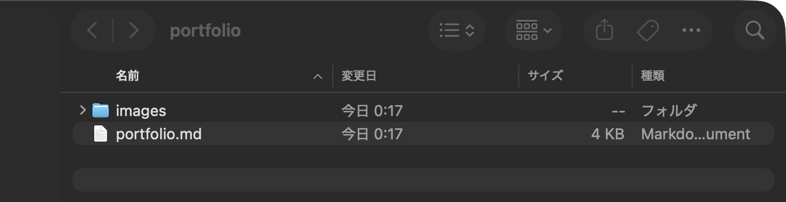
🤔 なぜフォルダを1つ決めるのか
Code は「このフォルダの中でファイルを読み書きしてよい」と決めてから動きます。フォルダを決めないと、設計書がどこにあるのか、index.htmlをどこに作ればよいのかが決まりません。
デスクトップに置くのは、あとでフォルダを選ぶときに迷わないためと、公開するときにアップロードするフォルダをすぐ見つけられるためです。
配布フォルダが手元に無い方：デスクトップで右クリック →「新規フォルダ」（Windows は「新規作成」→「フォルダー」）で portfolio を作り、その中にもう1つ images フォルダを作ってください。portfolio.md は、巻末の 付録A の内容を「テキストエディット」（Windows は「メモ帳」）に貼り付けて、portfolio.md という名前で portfolio フォルダに保存すれば同じものになります（付録Aは配布テンプレートと同じ内容です）。テキストエディットでは、貼り付ける前にメニューの「フォーマット」→「標準テキストにする」を選んでください（そのままだと .rtf という別の形式で保存されます）。保存したら、ファイル名が portfolio.md になっているか確かめます。portfolio.md.txt のように .txt が付いていたら消してください。Windows のメモ帳は、保存の画面で「ファイルの種類」を「すべてのファイル」に変えてから、名前に portfolio.md と入れます（「テキスト文書」のままだと portfolio.md.txt になります）。エクスプローラーの「表示」→「ファイル名拡張子」にチェックを入れておくと、こうした食い違いに気づけます。
⚠️ フォルダ名とファイル名は 半角の英数字 にしてください（portfolio・face.jpg・work1.pngのように）。
公開したとき、画像のファイル名は そのまま URL の一部になります。日本語や全角のファイル名は、環境によって文字化けしたり画像が表示されなかったりする原因になります。
images に同梱してある avatar1.png（または avatar2.png）のファイル名をそのまま設計書に書いてください。空欄にすると、写真なしのレイアウトで作られます。💡 スクリーンショットの撮り方
Mac：⇧ shift+⌘ command+4を押し、撮りたい範囲をドラッグ → デスクトップに画像ファイルとして保存されます。
Windows：Win+Shift+Sを押し、撮りたい範囲をドラッグ → 画面右下の通知を押すと保存できます（保存先は「ピクチャ」→「スクリーンショット」）。
撮れたファイルの名前をwork1.pngのような半角英数字に変えてからimagesに入れると、あとで指定しやすくなります。
portfolio.md に書く（ここが一番大事）portfolio フォルダの中の portfolio.md を開きます。ダブルクリックで開かないときは、右クリック →「このアプリケーションで開く」→ テキストエディット（Windows は右クリック →「プログラムから開く」→ メモ帳）を選びます。VS Code などのエディタがある方はそれで開いてください。
📗 用語
Markdown（.md）：#で見出し、-で箇条書きを表す、ただの文字だけの書き方です。特別なソフトは要りません。Claude はこの書き方を正確に読めるので、設計書に向いています。
設計書は 5つの部分 に分かれています。書けるところだけで大丈夫です。空欄はサイトに載りません。 書き方は簡単です。それぞれの行の「：」のうしろに、そのまま続けて書きます。 長くなるときは改行してかまいません。
| 項目 | 書くこと | なぜ必要か |
|---|---|---|
| 1. あなたのこと | 名前（表示名）・肩書き・ひとこと・自己紹介（3〜5行）・顔写真のファイル名・活動エリア | サイトの一番上に出て、見た人が最初に読む場所です。何をしている人かが1行で伝わる言葉を入れます |
| 2. 作品 | 作品名・種類・ひとことで何か・くわしく・使ったもの・画像のファイル名・リンク・作った時期 | 今日いちばん大事な部分。載せたい順に書きます（上に書いたものがサイトでも上に来ます） |
| 3. できること・使える道具 | ツール名やスキルを箇条書き | 作品だけでは伝わりにくい「対応できる範囲」を補います |
| 4. 連絡先・リンク | メール・SNS・GitHub など | サイトの目的は「連絡してもらうこと」。1つでもあれば十分です |
| 5. サイトの雰囲気 | 色の好み・雰囲気・参考サイト | Claude がデザインを決めるときの手がかり。空欄なら Claude におまかせになります |
「作品」は、お金をもらって作ったものだけではありません。次のようなものも立派な作品です。
それでも思いつかない方へ：今日作るこのポートフォリオサイト自体を「作品1」にしてください。
### 作品1
- 作品名：自分のポートフォリオサイト
- 種類：Webサイト
- ひとことで何か（1行）：Claude Code に日本語で頼んで作った、自己紹介と作品の1ページ
- くわしく（2〜4行）：設計書に載せたいことを書き出し、それを Claude Code に渡してサイトの形にしました。
- 使ったもの：Claude Code
- 画像のファイル名：
- リンク：
- 作った時期：（今日の年月）1つでも十分です。 今日の目的は「完成した作品集」ではなく、これから作ったものを足していけるサイトと URL を手に入れることです。 使わなかった「### 作品2」「### 作品3」は、空のまま残しておいて大丈夫です。お願い文で「空欄の項目はサイトに表示しない」と伝えるので、サイトには出てきません。
⚠️ 公開される前提で書いてください。
住所・電話番号・生年月日は載せません。本名を出すかニックネームにするかは自分で決めます。
勤務先の名前や、仕事で作ったものは 社外に出してよいか を確認してから載せます。顔写真も同じです。
メールアドレスは、公開すると機械に拾われて迷惑メールが増えることがあります。仕事用のアドレスを別に作るか、SNS の DM だけにするのも手です。
あとから直せるので、迷ったものは今日は空欄にしておきましょう。
配布物の中の 記入例_ペン太 フォルダ（portfolio と同じ並びにあります）に、事務職で生成AIを学習中の「ペン太」さんの設計書と、そこから作ったサイトを入れてあります。「作品」の書き方は、たとえばこうです。
### 作品1
- 作品名：今月の家計簿アプリ
- 種類：学習の成果物（Webアプリ）
- ひとことで何か（1行）：収入・支出・残りが一目でわかる、自分用のシンプルな家計簿
- くわしく（2〜4行）：Excelで管理していた家計簿を、スマホでも見やすいWebアプリにしました。
Claude Codeに日本語で頼みながら、分類の色分けと「残り」の自動計算を追加。
- 使ったもの：Claude Code、HTML / CSS / JavaScript
- 画像のファイル名：kakeibo.png
- リンク：
- 作った時期：2026年8月書き終えたら 保存（⌘S。Windows は Ctrl+S）します。保存していないと、Claude は古い内容を読んでしまいます。
アプリ左上の 「ホーム」／「Code」 の切り替えで、「Code」 をクリックします。
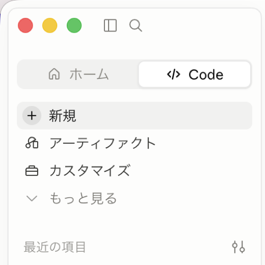
入力欄のすぐ上に、フォルダのアイコンが付いた小さなボタンがあります（ローカル の右どなりです）。 これをクリック →「フォルダを開く…」を選びます。 まだフォルダを選んでいないときは、このボタンに前に使ったフォルダの名前（または「フォルダなし」）が出ています。名前が何であっても、押して出るメニューの一番下の「フォルダを開く…」を選べば大丈夫です。
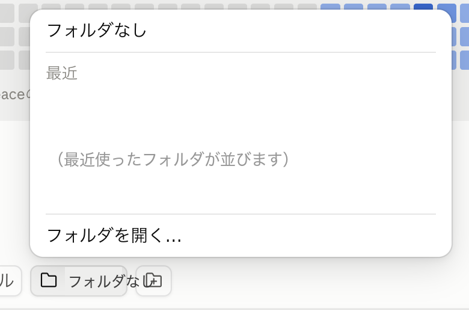
ファイルを選ぶ画面が開くので、デスクトップ → portfolio の順にたどり、portfolio フォルダをダブルクリックして中に入ったら、何も選ばずに「開く」（Windows は「フォルダーの選択」）を押します。
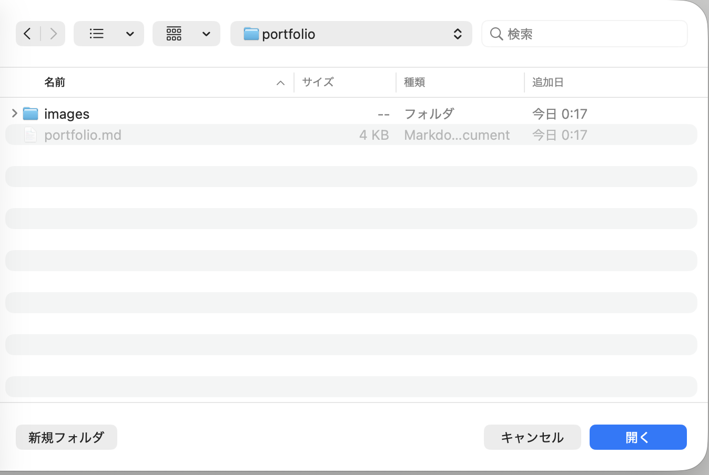
🤔 なぜ「フォルダ」を選ぶのか（ファイルではなく）
Claude Code は、選んだフォルダの中にあるportfolio.mdとimagesを読み、同じ場所にindex.htmlを作ります。
ファイル1つを渡す方式だと、画像フォルダが見えず、作ったindex.htmlの置き場所も決まりません。
初めてのフォルダでは、下のような確認が出ます。押す前に、ダイアログに出ているフォルダの場所を見てください。 いちばん最後が portfolio、その1つ手前が Desktop（デスクトップ） になっていれば OK です（間に OneDrive が入っていてもかまいません）。 違うところが出ていたら「キャンセル」して、もう一度フォルダを選び直してください。 確認できたら「ワークスペースを信頼する」を押して進みます。
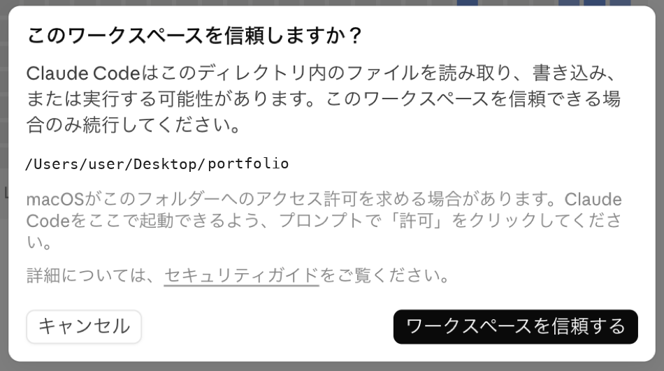
⚠️ これは「このフォルダの中で、ファイルを読み書きしたり動かしたりしていいですか？」という確認です。
信頼すると、Claude がこのフォルダの中で自分でファイルを作ったり書き換えたりできるようになります。
自分が作った・中身が分かっているフォルダのときだけ信頼してください。
※ 一度信頼したフォルダでは、この確認は出ません。出なくても失敗ではありません。
Mac では、このあとにもう1つ確認が出ることがあります。「"Claude"から"デスクトップ"フォルダ内のファイルにアクセスしようとしています」という、パソコン（macOS）側からの確認です。Claude がデスクトップの中を読めるようにするための確認なので、「許可」（または「OK」）を押してください。ここで「許可しない」を押すと、portfolio.md を読めません。
📗 用語
ワークスペース：Claude Code が作業する場所として選んだフォルダのことです。今日はportfolioフォルダがワークスペースです。
入力欄の上のボタンが portfolio になっていれば成功です。ボタンが images になっていたら、portfolio の中の images を選んでしまっています。もう一度選び直してください。
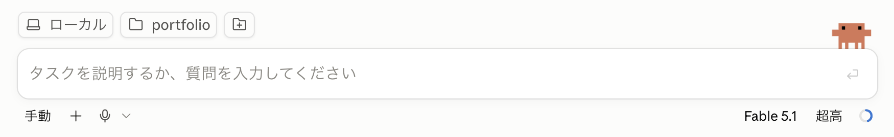
※ 画面右下のモデル名や設定（例：Fable 5.1「超高」）は、この資料を作ったときのものです。あなたの画面と違っていて大丈夫です。
📗 用語
入力欄の左下で、Claude の動き方を3つから選べます。プラン：やることを考えて提案するだけで、ファイルは作りません（相談用）。手動：ファイルを作る前に、毎回「してよいですか」と聞いてきます。自動：聞かずに作ります。今日はファイルを作るのが目的なので、「プラン」では進みません。
💡 入力欄の左下のボタンが 「手動」（古いバージョンでは「編集を承認」）か 「自動」 なら、そのまま進めます。
ここが 「プラン」 になっているとファイルが1つも作られません。「手動」か「自動」に切り替えてください。
「手動」のときは、Claude がファイルを作る前に「はい／許可」を聞いてきます。内容を見て「許可」を押せば進みます。
💡 ターミナル版（コマンド入力）で参加する方へ
ターミナルでcd ~/Desktop/portfolioと入力して Enter、続けてclaudeと入力して Enter で起動します。Windows は、PowerShell ならcd "$HOME\Desktop\portfolio"、コマンドプロンプトならcd %USERPROFILE%\Desktop\portfolioです（デスクトップを OneDrive に置いている PC では場所が違うことがあります）。
あとは、この手順書のお願い文をそのまま貼るだけで同じように進められます。「信頼しますか？」の確認は文字の選択肢で出るので、矢印キーで「Yes」を選んで Enter。動き方（手動／自動／プラン）の切り替えはShift＋Tabです。アプリの中のプレビューは出ないので、index.htmlはフォルダからダブルクリックして開いてください。
🎯 ゴール：portfolio フォルダに index.html ができて、ダブルクリックで自分のサイトが開く
💬 貼り付けるお願い（このまま全部コピーして貼ります）
このフォルダの portfolio.md を読んで、自己紹介と作品を並べた1ページのポートフォリオサイトを index.html という名前で作ってください。
守ってほしいこと：
- HTML・CSS・JavaScript は index.html の1ファイルにまとめる（外部のライブラリやCDNは使わない）
- 画像は images フォルダのものを使う
- スマホでもパソコンでも見やすいレイアウトにする
- portfolio.md で空欄の項目はサイトに表示しない
- 作品は portfolio.md に書いた順番で並べる
- 「5. サイトの雰囲気」に書いた希望を色とデザインに反映する
- 画像には内容が分かる代わりの文（alt）を付け、文字は背景に対して読みやすい濃さにする
- JavaScript が動かなくても内容が読めるようにする
できあがったら、確認のしかたを教えてください。画面下の入力欄に貼り付けて、Enter で送信します。
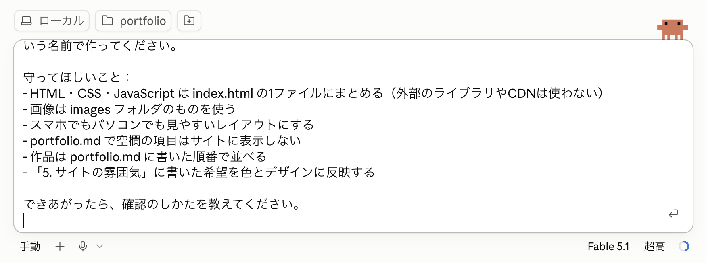
🤔 お願い文の「守ってほしいこと」は何のためか
1ファイルにまとめる：公開するときにindex.htmlとimagesだけをアップロードすればよくなり、「別のファイルが足りなくて表示が崩れる」事故を防げます。
外部のライブラリを使わない：インターネット上の部品に頼ると、その部品が変わったり止まったりしたときにサイトごと壊れます。
空欄は表示しない：「メール：」のような空の見出しが残ると、未完成に見えてしまいます。
書いた順番で並べる：見せたい順は、あなたが決めるものです。Claude に勝手に並べ替えさせません。
スマホでも見やすく：URL を送った相手は、多くの場合スマホで開きます。パソコンだけで整えると、文字がはみ出したり画像が切れたりします。最初から両方で見られる形にしておきます。
「5. サイトの雰囲気」を反映する：ここが空欄だと Claude が自分で色を決めます。書いておけば、あとから色を直す回数が減ります。
alt・読みやすい濃さ・JavaScript 無しでも読める：画像が表示できない環境や、目の不自由な方の読み上げでも内容が伝わるようにする決まりごとです。最初に頼んでおくと、あとから直す手間がありません。
📗 用語
HTML / CSS / JavaScript：Web ページを作る3種類の書き方です。HTML は「何を載せるか」（文章・画像）、CSS は「どう見せるか」（色・配置）、JavaScript は「どう動くか」（クリックしたときの反応）を担当します。今日はすべて Claude が書きます。
ライブラリ・CDN：ほかの人が作った部品を、インターネット経由で借りてくるしくみです。便利ですが、借り先が変わったり止まったりすると自分のサイトも崩れます。今日は借りずに作ります。
送信すると「作成中」や「考え中」と表示されます。ここで数分かかります。Claude はまず portfolio.md と images の中身を読み、それから index.html を書きます。
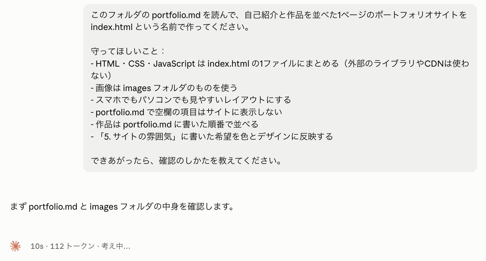
「許可しますか？」と聞かれたら、四角の中に出ている場所が Desktop/portfolio の中を指していることだけ確かめて、「一度だけ許可」 を押してください。英語の部分は読めなくて大丈夫です。今日のお願いでは、Claude は画像の大きさを調べたりファイルを作ったりするだけです。「手動」のときは、このように一つずつ確認してきます。押すまで Claude は待っていますので、止まって見えたらこの確認が出ていないか見てください。
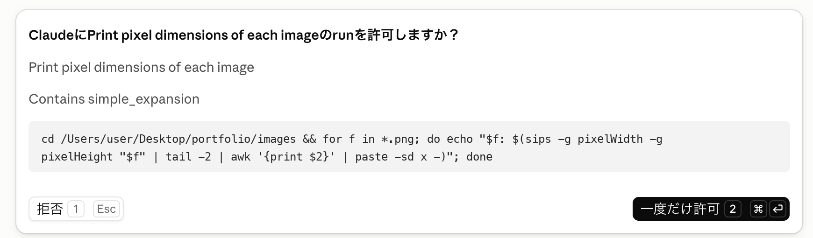
🤔 なぜ毎回聞かれるのか
「手動」は、Claude がパソコンの中で何かを実行する前に必ず人の確認を取る設定です。今日のように中身の分かっているフォルダなら「自動」にしても構いませんが、初めてのうちは何をしようとしているかが見える「手動」のほうが安心です。
👀 うまくいくと：portfolio フォルダに index.html ができ、Claude が「ダブルクリックで開けます」のような案内を返します。右側にアプリ内のブラウザが開いて、サイトが表示されることもあります。
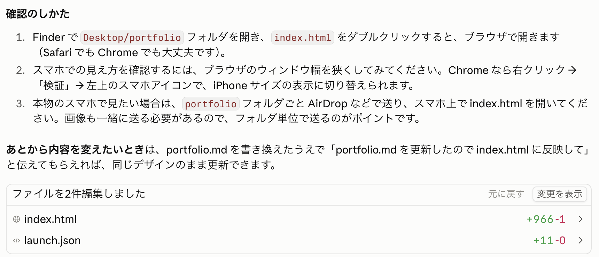
一覧に launch.json のようなファイルが一緒に出ることがあります。Claude が作業用に作るファイルで、公開には要りません。
✅ 見てみよう：portfolio フォルダの index.html をダブルクリックすると、いつものブラウザで開きます。
⚠️ AIなので、出来上がりは人によって違います。 隣の人と色や配置が違っていて正常です。
気に入らないところは、次の章で「頼んで直す」ので心配いりません。
🔧 ダメなとき
portfolio.md に書いたファイル名と、images の中のファイル名（拡張子 .png .jpg まで）が同じか確認。違っていたら直して 画像のファイル名を直しました。index.html に反映してください。続きを作ってください。index.html ができない → 左下が「プラン」になっていないか確認（3-4）ここからは 「見て → 頼んで → 再読み込み」 の繰り返しです。同じ会話に続けて貼っていきます（新しく開き直さないでください）。同じ会話の中でなら、Claude は「さっき作った index.html のどこをどう書いたか」を覚えています。新しく開くと読み直しからやり直しになり、直したはずの場所が戻ることがあります。
| コツ | どういうこと？ | 例 |
|---|---|---|
| ① 一度にひとつだけ頼む | 欲張ると意図と違う直し方をされやすい。1回のお願い＝1か所 | ×「色も並びも文章も全部変えて」 → 〇「まず見出しの色だけ変えて」 |
| ② 見た目の言葉で場所を伝える | HTML の言葉は不要。画面のどこかを言えば通じる | 〇「作品の2番目のカードの説明文を、2行くらいに短くして」 |
| ③ 直したら再読み込み | ブラウザは開いた時点の内容を表示したまま。index.html が書き換わっても自動では変わらない | 直してもらったら ⌘R（Windows は Ctrl+R） |
見出しと差し色を、緑系に変えてください。作品の並び順を変えて、〈いちばん見せたい作品名〉を一番上にしてください。自己紹介の文章を、もう少し短く3行くらいにまとめてください。内容は変えないでください。顔写真をもう少し大きく、丸く切り抜いて表示してください。「できること」の項目を、タグのような小さな四角で横に並べてください。連絡先の下に、メールを送るボタンを付けてください（portfolio.md に書いたメールアドレスを使ってください）。スマホの幅で見ると作品カードの文字がはみ出します。スマホでは1列に並ぶように直してください。その変更は取り消して、直前の状態に戻してください。たとえば「見出しと差し色を緑系に」と頼むと、こう変わります。中身は同じまま、色だけが変わっていることを確かめてください。
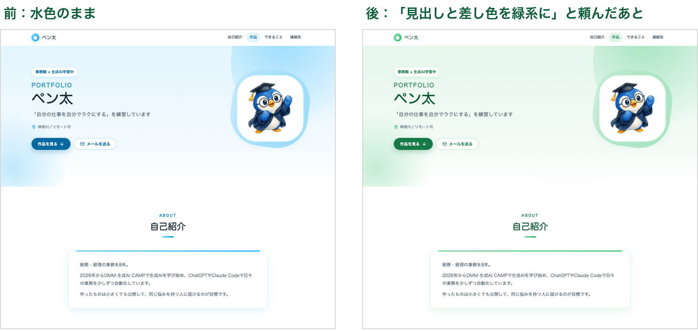
直し終わると、Claude は 何をどう変えたか を説明してくれます。思っていたのと違えば、その説明を手がかりにもう一度頼みます（例：「背景の薄い色は水色のままにして」）。
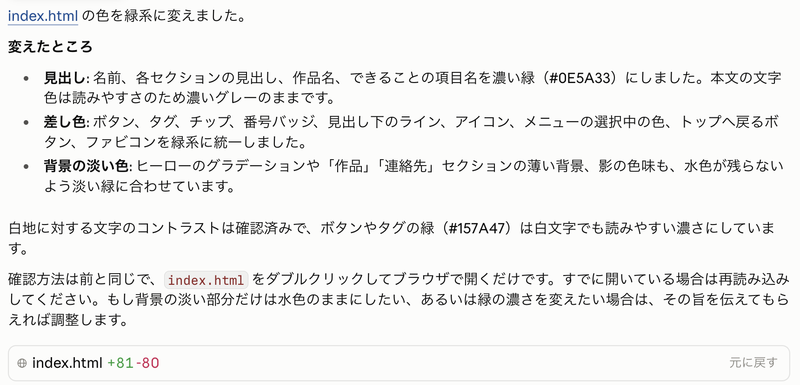
⚠️ 直してもらったのに変わらないときは、まず再読み込み。 ブラウザのタブを開いたままだと前のままです。
⌘R（Windows は Ctrl+R） を押してから、もう一度見てください。アプリの中のプレビューも同じです。
📎 気に入った状態になったら、控えを1つ取っておきます。portfolioフォルダのindex.htmlを選んでコピー（⌘C。Windows はCtrl+C）し、そのままペースト（⌘V。Windows はCtrl+V）するとindex のコピー.htmlができます。これが控えです。
戻したくなったら、いまのindex.htmlの名前をindex-old.htmlなどに変えてから、控えの名前をindex.htmlに変えます。
ファイル操作が不安なら、Claude にいまの index.html を index-backup.html という名前で複製してください。と頼んでも同じことができます。
🎉 ここまでで「自分のポートフォリオサイト」が手元にできました。 ファイルはすでにあなたのパソコンにあります。保存の作業はいりません。
色や文言を1か所ずつ直すだけでなく、「雰囲気」をまるごと指定して作り直すこともできます。 講師の見本は、同じ設計書（portfolio.md）と同じ画像から、Claude に次のようなお願いをして5つのパターンに作り分けたものです。 中身は5つとも同じで、変わっているのは見た目と語り口だけです。気に入った方向のお願い文を、自分の言葉に直して使ってください。
📗 用語
ヒーロー：サイトを開いていちばん最初に目に入る、上部の大きな一区画のことです。名前・肩書き・顔写真が入るところを指します。
差し色：白や黒などの地の色に対して、ボタンや見出しなどに少しだけ使う目立つ色のことです。
🤔 なぜ「雰囲気」は設計書と分けて指示するのか
設計書には「何を載せるか」だけを書いておき、見た目は別のお願いで指定します。こうしておくと、文章やリンクを保ったまま、見た目だけを何度でも変えることができ、逆に作品を足すときも見た目が崩れません。
お願い文の最初に「載せる内容・作品の順番・リンク・数字は変えない」と念を押すのがコツです。これが無いと、Claude が気を利かせて文章や数字まで書き換えることがあります。
⚠️ 別バージョンは 別の名前（index-humor.htmlなど）で作ってもらうと、元のindex.htmlが残ります。
できあがった別バージョンはportfolioフォルダの中にできています。そのファイルをダブルクリックして開いてください（index.htmlのタブを再読み込みしても変わりません）。
公開するときは、まず今のindex.htmlをindex-simple.htmlなどに改名してから、気に入ったほうをindex.htmlに改名します。先に改名しないと、元のほうが上書きされます。
どのパターンのお願い文にも、最後に次の塊を付けて貼ります。デザインを大きく変える依頼では、Claude が中身や画像の場所まで書き換えてしまうことがあるためです。
守ってほしいこと：
- portfolio.md・images フォルダ・元の index.html は変更しない。指定した別ファイルだけを作る
- 設計書（portfolio.md）に無い事実・実績・経歴・数字・サービスを足さない
- 外部のライブラリ・CDN・Web フォントを使わない。画像のパスも変えない
- スマホ（幅 320px）でも横にはみ出さない。文字は背景に対して読みやすい濃さにする
- 画像の alt、見出しの順番、キーボードでの操作は元のまま保つ
- できあがったら、作ったファイル名と確認のしかたを教えてください講師の見本は、設計書の「5. サイトの雰囲気」にこう書いたうえで、4章のお願い①を貼った結果です。
- 色の好み：白地に、紫のアクセントを 1 色だけ
- 雰囲気：余白を広く取ったシンプルで今風。作品カードを主役に
- 参考にしたいサイト：見出しを大きく・写真は丸く・実績の数字は帯にして横に並べるすでに index.html がある方が、別バージョンとして試すときはこう頼みます。
index.html を、雰囲気だけ変えた別バージョン index-minimal.html として作ってください。
載せる内容・作品の順番・リンク・数字は変えないでください。
白地に、差し色は1色だけ（紫）。余白を広く取ったシンプルで今風の雰囲気。
見出しは大きく、顔写真は丸く、実績の数字は「大きな数字＋小さなラベル」を横に並べた帯にしてください。
作品カードを主役にして、カードにマウスを乗せると少し浮くようにしてください。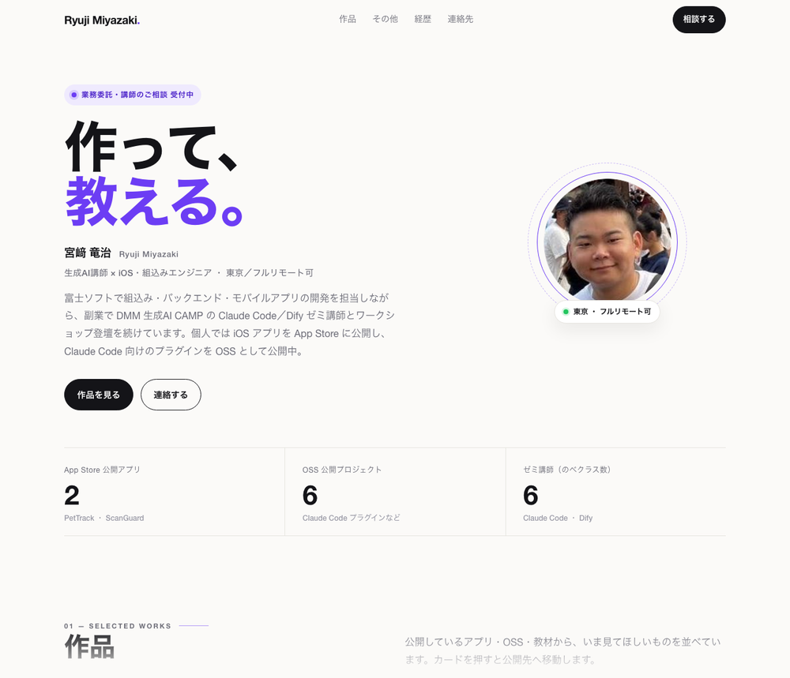
index.html を、雰囲気だけ変えた別バージョン index-humor.html として作ってください。
載せる内容・作品の順番・リンク・数字は変えないでください。
方向性はユーモアと親しみ。事実・固有名詞・数字・実績・作品名・リンクは変えずに、文章の意味を保ったまま、語尾と語り口だけを砕けた一人称にして人柄を見せてください（実績の数字や信頼感は崩さない）。
色は暖色（オレンジ・コーラル・クリーム）。丸みのある形、手描き風の下線、少し傾けたラベル、2px の濃い色の枠線と影、吹き出しの自己紹介で遊んでください。
ヒーローは丸い顔写真のまわりに、実績のバッジを浮かべる構成に。作品カードは、上にマスキングテープを貼ったような飾りを付けて少し傾けてください。
絵文字は使わず、言葉づかいと色とあしらいで親しみを出してください。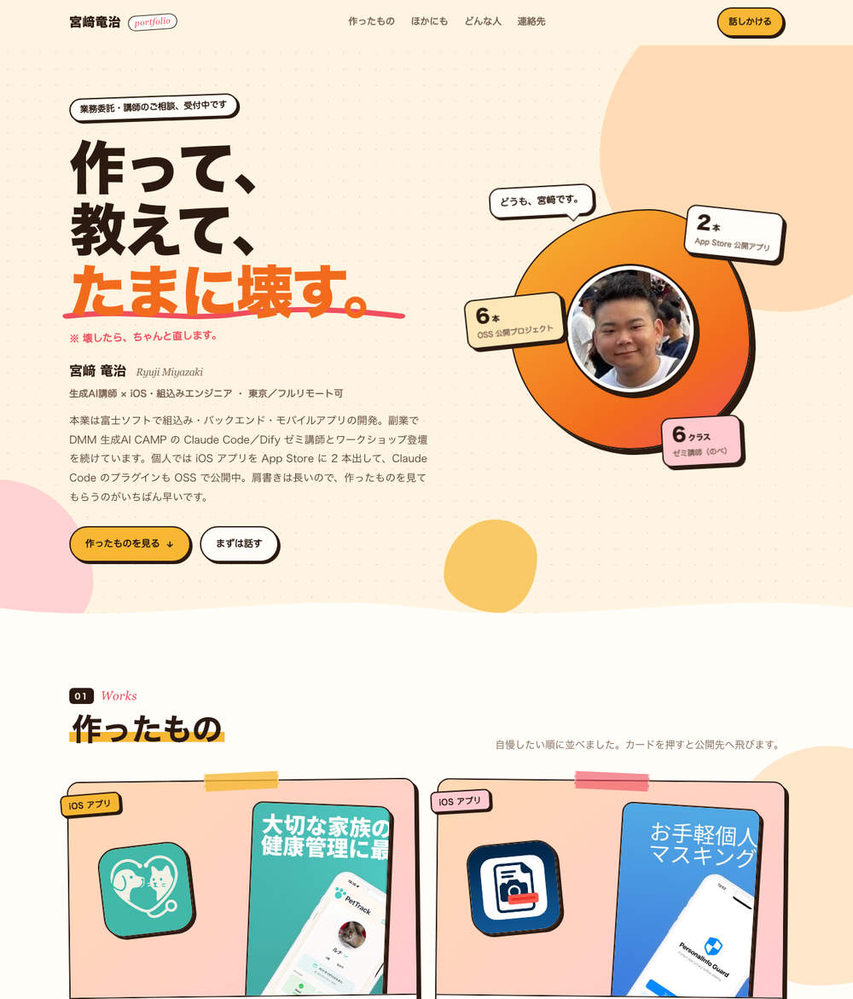
index.html を、雰囲気だけ変えた別バージョン index-dark.html として作ってください。
載せる内容・作品の順番・リンク・数字は変えないでください。
黒〜濃紺の地に、差し色は1色だけ（黄色）。画面幅いっぱいに迫る巨大な名前の文字（〈あなたの名前をローマ字で。例：PENTA〉）で個性を出してください。
実績の数字は、大きな数字と小さなラベルを横に並べた帯にして、均等なタイルにはしないでください。
作品カードは暗いカードにうっすら光る差し色。マウスを乗せると浮く。経歴は差し色の点と線のタイムライン。
暗い背景でも本文が読めるコントラストを確保してください。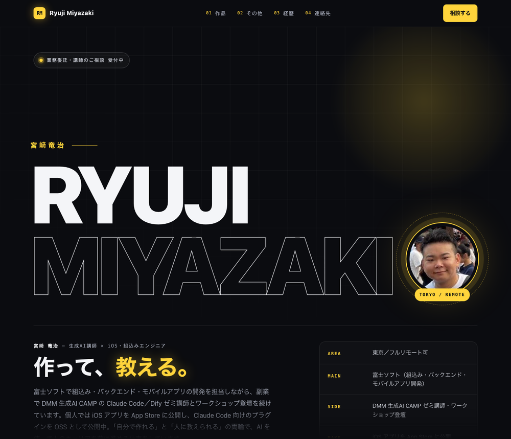
index.html を、雰囲気だけ変えた別バージョン index-editorial.html として作ってください。
載せる内容・作品の順番・リンク・数字は変えないでください。
雑誌の誌面のような白黒と罫線。巨大な英字の名前と、明朝体（セリフ体）の日本語見出し。余白をたっぷり取ってください。
作品は「番号付きの罫線リスト（作品名・種別・年・リンク）」を主役にして、全部を元の順番で載せてください。そのうち画像がある先頭の3〜4点だけを、リストの前に同じ順番で大きな画像で見せる構成に。
写真はモノクロに統一。差し色を使うなら1色をごく少量。動きは控えめに。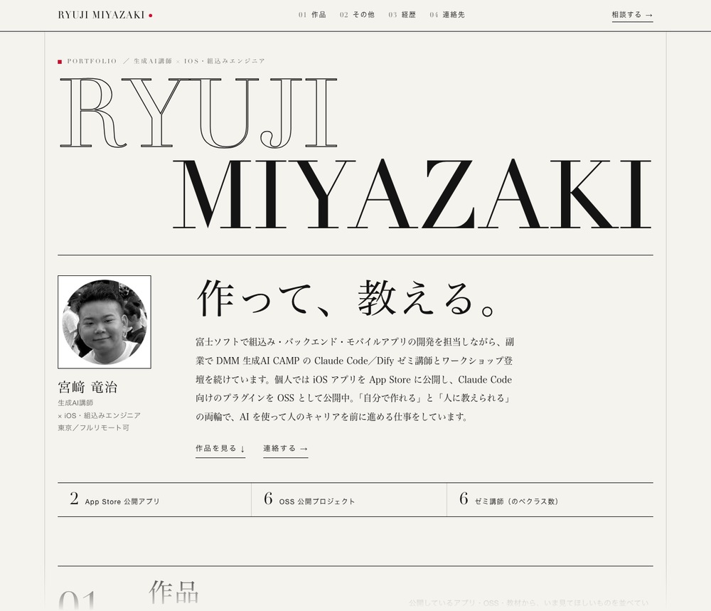
index.html を、雰囲気だけ変えた別バージョン index-business.html として作ってください。
載せる内容・作品の順番・リンク・数字は変えないでください。
読む相手は〈読んでほしい相手。例：企業の研修担当者や、業務委託の発注者〉です。紺とベージュを基調に、金や朱の差し色を少量。明朝体（セリフ体）の大見出しで落ち着いた信頼感を出してください。
ヒーローには、設計書の「できること・使える道具」に書いてある内容だけを「提供できること」のカードとして並べ（3枚に満たなくてもよい。書いていないサービスは足さない）、その下に実績の数字を1行の帯で。
作品カードは白いカードに細い罫線と控えめな影。経歴は会社ごとのカード。
連絡先には「ご相談の流れ（ご連絡 → 内容のすり合わせ → 実施）」のような一般的な3段階を添えて、メールのボタンを目立たせてください。料金や日数は書かないでください。文体は敬体で簡潔に。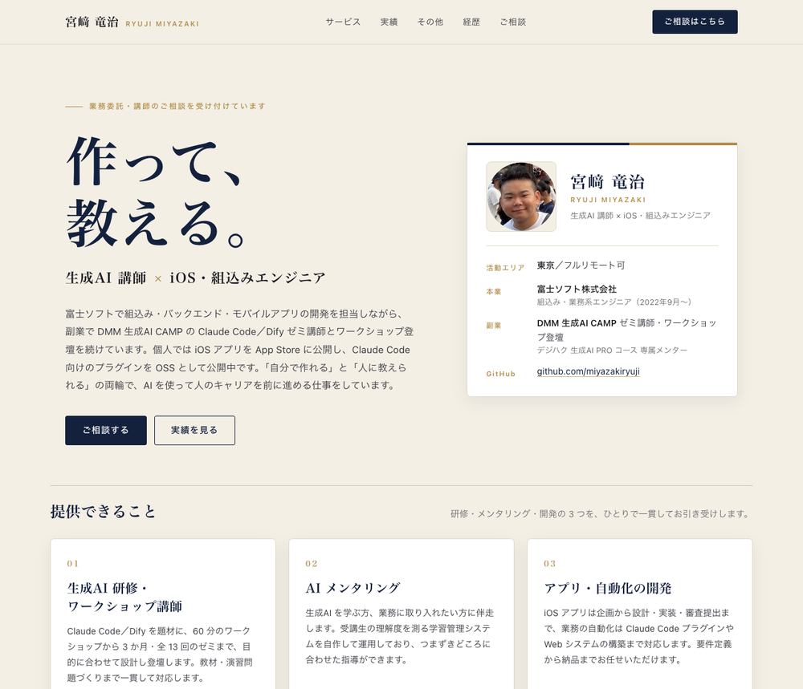
💡 お願い文の作り方（共通の型）
①「別の名前で作って」＋「中身は変えないで」 → ②誰に見せたいか・どんな印象にしたいか → ③色（2〜3語） → ④形や質感（丸い・罫線・ステッカー・光る など） → ⑤見出しの書体（ゴシック／明朝）と語り口。
5つ全部を書かなくても大丈夫です。②と③だけでも、雰囲気はかなり変わります。
公開の手順は、別紙 「Netlify で公開する」 に沿って進めます。ここでは、公開すると何が起きるかだけ押さえておきます。
portfolio フォルダ（index.html と images）を Netlify という公開サービスにアップロードすると、あなた専用の URL が発行されます🤔 なぜindex.htmlをダブルクリックで開けるのに、公開の作業がいるのか
ダブルクリックで開いているのは、あなたのパソコンの中のファイルです。他の人のパソコンにはそのファイルが無いので、URL を送っても開けません。
インターネット上の置き場所（サーバー）にファイルを置いて、誰でも取りに来られる状態にするのが「公開」です。
index-dark.html など）が残っていないか。公開したくないものは、アップロードするフォルダから外すindex.html と images だけになっているか（portfolio.md は設計書なので、公開しなくてかまいません）作品が増えたら、こう更新します。
portfolio.md に 作品の塊を1つ足す（「### 作品」をコピーして書く）。画像があれば images に入れるportfolio フォルダ を開き、次のお願いを貼るportfolio.md に作品を1つ足しました。index.html に反映してください。
デザインは今のまま変えないでください。💡 これが、設計書を先に書く方式の良いところです。サイトを作り直すのではなく、設計書に足すだけです。
デザインを変えたくなったときも、portfolio.mdはそのままで「雰囲気を落ち着いた紺色に変えて」と頼めば、文章やリンクを保ったまま見た目だけを変えられます。
| こまりごと | やること |
|---|---|
| 直してもらったのに、さっきと同じまま | まずブラウザのタブで ⌘R（Windows は Ctrl+R）で再読み込み。頼み直す前に、必ずこれを試す |
| 画像が表示されない（枠だけ・壊れたマーク） | portfolio.md のファイル名と images の中のファイル名を見比べる（大文字小文字・拡張子まで同じか）。直したら 画像のファイル名を直しました。反映してください。 |
index.html ができない | 入力欄左下が「プラン」になっていないか確認。「手動」か「自動」にして index.html を作ってください。 |
| 「許可しますか？」で止まっている | 場所が Desktop/portfolio の中であることを確かめて「一度だけ許可」を押す。押すまで Claude は待っています |
| 作るのが途中で止まった | 「作成中」「考え中」の表示が消えているか確認。消えていたら 続きを作ってください。 |
| 変な方向に変わってしまった | 直前の変更を取り消してください。 それでも直らなければ、いまの index.html を index-old.html に改名してから、控えの名前を index.html に変える |
| いっぺんに頼んだら崩れた | ひとつずつに分けて頼み直す（コツ①） |
| フォルダを間違えた | 入力欄の上のフォルダのボタンから選び直す。分からなければ左上の「新規」で会話を作り直し、3章のやり方でもう一度選ぶ |
| 設計書を直したのに反映されない | portfolio.md を保存したか確認（⌘S。Windows は Ctrl+S）。保存してから portfolio.md を更新しました。反映してください。 |
利用の上限に達しました と出た | ファシリテーターに声をかけてください。しばらく待つと再び使えるようになります。そこまでに作られたファイルはフォルダに残っています（消えません）。待つあいだは portfolio.md の書き足しを進めておくと無駄がありません |
あなたの「作ったもの」を、そのまま言葉にすれば形になります。おつかれさまでした！
portfolio.md のひな形（全文）配布フォルダが手元に無いときは、以下をテキストエディット（Windows はメモ帳）に貼り付け、portfolio.md という名前で portfolio フォルダに保存してください。
# ポートフォリオの設計書
このファイルに「サイトに載せたいこと」を書きます。**書けるところだけで大丈夫**です。
空欄の項目はサイトに載りません。あとから足せば、そのぶんサイトも育ちます。
---
## 1. あなたのこと
- 名前（サイトに出す表示名。ニックネームでも可）：
- 肩書き・ひとこと（例：Webデザイン学習中／生成AIで業務改善をしています）：
- 自己紹介（3〜5行。何をしてきて・何ができて・これから何をしたいか）：
- 顔写真・アバターのファイル名（images フォルダに入れたもの。例：face.jpg）：
- 活動エリア（任意。例：東京／フルリモート）：
---
## 2. 作品（載せたい順に。作品が増えたら「### 作品」の塊をコピーして足す）
### 作品1
- 作品名：
- 種類（例：Webサイト／スマホアプリ／画像・デザイン／文章・記事／自動化ツール／学習の成果物）：
- ひとことで何か（1行）：
- くわしく（2〜4行。何のために・何を・どう工夫したか）：
- 使ったもの（例：Claude Code、Canva、Dify、Python）：
- 画像のファイル名（images フォルダに入れたもの。例：work1.png）：
- リンク（公開URL・App Store・GitHub など。無ければ空欄）：
- 作った時期（例：2026年8月）：
### 作品2
- 作品名：
- 種類：
- ひとことで何か（1行）：
- くわしく（2〜4行）：
- 使ったもの：
- 画像のファイル名：
- リンク：
- 作った時期：
### 作品3
- 作品名：
- 種類：
- ひとことで何か（1行）：
- くわしく（2〜4行）：
- 使ったもの：
- 画像のファイル名：
- リンク：
- 作った時期：
---
## 3. できること・使える道具（例：Claude Code／ChatGPT／Canva／Excel／写真撮影／文章作成）
-
-
-
---
## 4. 連絡先・リンク
- メール：
- X（Twitter）：
- GitHub：
- その他（Instagram・note・YouTube など）：
---
## 5. サイトの雰囲気（任意）
- 色の好み（例：紺と白で落ち着いた感じ／明るいオレンジ）：
- 雰囲気（例：シンプル／親しみやすい／かっこいい）：
- 参考にしたいサイトのURL（あれば）：